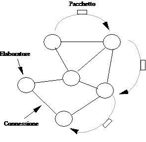
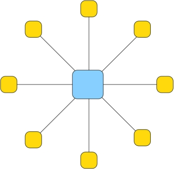
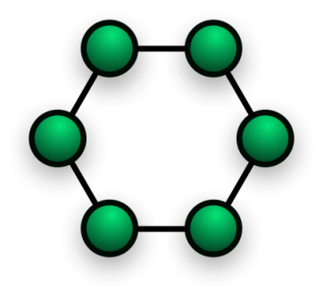
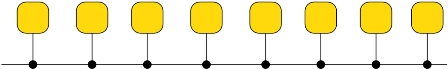
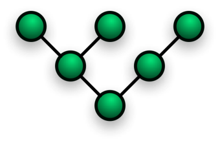
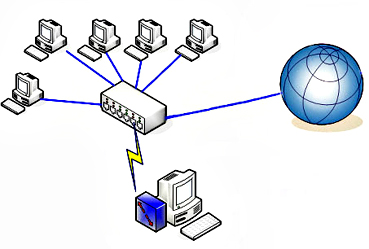
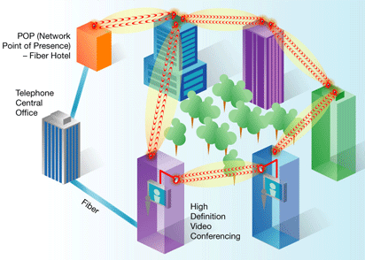
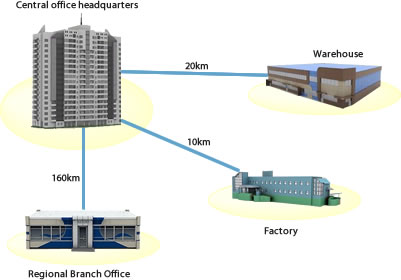
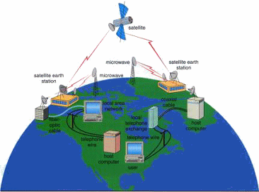
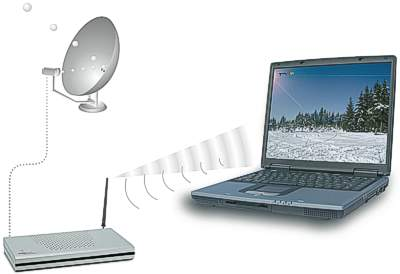

Nome |
Immagine |
Descrizione |
Vantaggio |
Svantaggio |
Rete punto a punto |
 |
Una rete punto a punto è realizzata unendo ogni device della rete con un cavo. |
1- Ogni nodo può parlare direttamente con tutti gli altri.
2- E' una rete molto veloce. |
1- Il costo della rete è molto alto.
2- Sono necessari dei device speciali, cioè con tante schede di rete.
|
Rete a stella |
 |
Una rete a stella funziona collegando tutti i device a un punto centrale. Questo nodo centrale può essere un computer speciale o un hub o uno switch. |
1- è una rete molto semplice.
2- E' una rete molto economica.
| 1- Nel caso si rompa il computer centrale tutti gli altri nodi smettono di comunicare.
2- Tutte le comunicazioni passano nel nodo centrale che se non è ben programmato lascia vedere i dati agli altri nodi.
|
Rete ad anello |
 |
Prevede che ogni nodo sia collegato ad altri due. |
1- E' una rete semplice.
2- E' una rete semplice da espandere.
|
1- La rottura di un nodo blocca tutta la comunicazione.
2- Per parlare tra due nodi potrebbe essere necessario passare per tutti gli altri nodi della rete.
|
Rete a bus |
 |
La rete a bus è basata su un cavo speciale che collega tutti i device |
1- E' una rete semplice da utilizzare
2- E' economica |
1- La rottura di un terminatore può bloccare la rete
2- La rottura del bus può bloccare tutta la rete |
Rete ad albero |
 |
E' una rete in cui sono definitedelle gerarchie cioè un nodo può essere padre di altri nodi.
Ogni nodo è collegato ad almeno un altro nodo che può vedere pezzi di rete maggiori |
1- E' adatta a gestire piccoli gruppi che devono condividere risorse
2- La rottura di un nodo consente ad altri pezzi di rete di funzionare |
1- E' una rete complicata da realizzare e mantenere
2- L'aggiunta di un nodo può richiedere configurazioni complesse
|
Nome |
Immagine |
Descrizione |
Vantaggio |
Svantaggio |
Lan |
 |
Local Area Network è una rete informatica di collegamento tra più computer che ciopre un'area limitata |
1- E' una rete semplice
2- E' una rete economica |
1- E' adatto solo per piccole aree
2- Ha una sicurezza limitata
|
Can |
 |
Campus Area Network è una rete che serve a collegare edifici relativamente vicini, normalmente collega sottoreti Lan |
1- E' normalmente più sicura di una lan
2- Consente la condivisione di risorse aziendali senza accesso a internet |
1- E' normalmente più costosa
2- E' normalmente più complessa da gestire |
Man |
 |
La Metropolitan Area Network è una rete che serve a collegare reti ad una distanza non molto elevata |
1- Permette di condividere risorse azinedali anche tra sedi diverse
2- E' una rete sicura |
1- E' una rete complicata e costosa
2- Non è sempre possibile realizzarla
|
Wan |
 |
E' una rete che copre regioni vaste della terra |
1- Consente di realizzare una rete parallela ad internet
2- E' una rete sicura |
1- Ha dei costi elevatissimi
2- E' una rete complicata da realizzare e da gestire |
Wlan |
 |
E' una rete che si basa sull'uso di componenti wifi |
1- E' una rete semplice da realizzare e gestire
2- E' la rete più economica da realizzare
|
1- E' una rete poco sicura
2- Le prestazioni offerte non sono molto buone |